Delivered Features
Feature summary for presentation with tour screenshots attached.
1. Tour Jobs support and payout added
- Tour payments are charged through ACH flow.
- Crew is paid out weekly.
- Single attendance tab for the full tour.
- AI call position support added for tour jobs.
- Invoice support added for tours.
2. Invoice support extended
- Invoices are now paid from regular ACH cron flows.
- After invoice approval and funds arrival, payout to crew is processed after 7 days.
- Invoice tab was upgraded and clearly segregated from commitments/batches payment views.
- Crew can now see invoice status directly (for example: Funds Held, payout eligibility timeline).
3. UI enhancements for the Job Stepper
- Added a job timeline stepper to show lifecycle progress clearly: Draft → Published → Crew Hired → Funded → In Progress → Completed.
- Current stage is visually highlighted so teams know exactly where the job is in the operational pipeline.
- Stepper appears directly on job detail for faster status awareness during live operations.
4. Added company-level minimum hours override field
- New Company Profile → Pay Policies page enables skill-level minimum-hours override.
- Company can search for a specific skill and set custom minimum billable hours.
- Overrides are applied per company without changing platform defaults globally.
5. Added Duplicate Job for company ease-of-use
- Company can duplicate an existing job directly from the job action menu.
- Duplicate flow creates a new draft with copied structure for faster setup.
- Wizard opens prefilled so teams can quickly adjust dates/details and publish.
6. Crew rate tab now supports hourly and daily rate
- Crew Profile → Skills & Rates tab now supports both hourly and daily rate selection.
- Rate type is visible per skill, giving companies clearer rate expectations during matching.
Only daily hours are currently used for the calculation.
Tour Demo Evidence (Screenshots)
Captured from company and crew portals for the current tour flow and payout lifecycle.
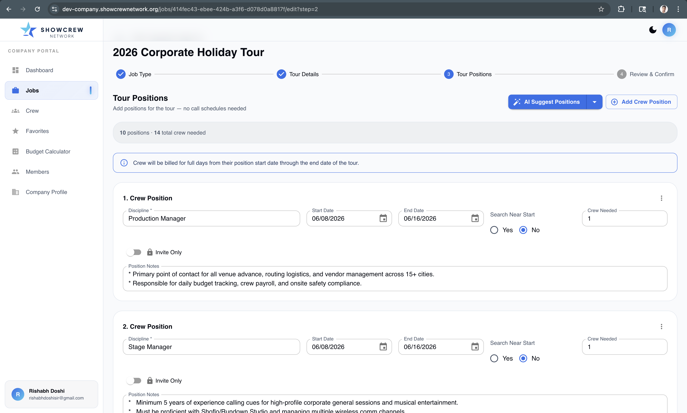
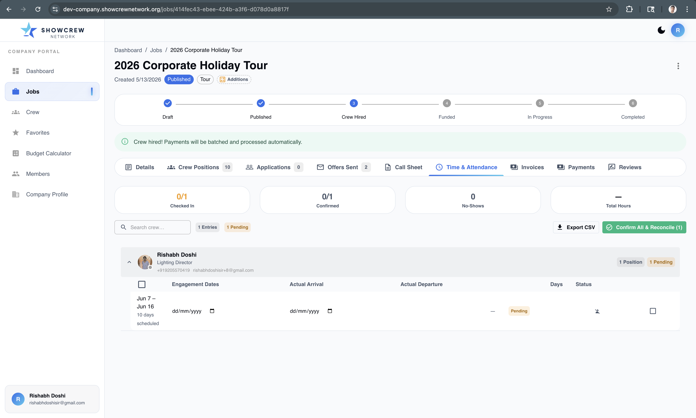
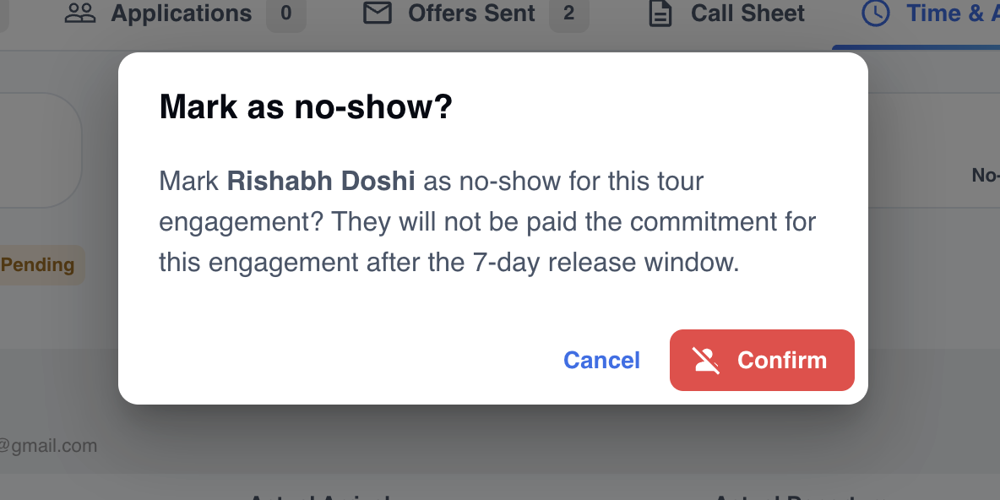
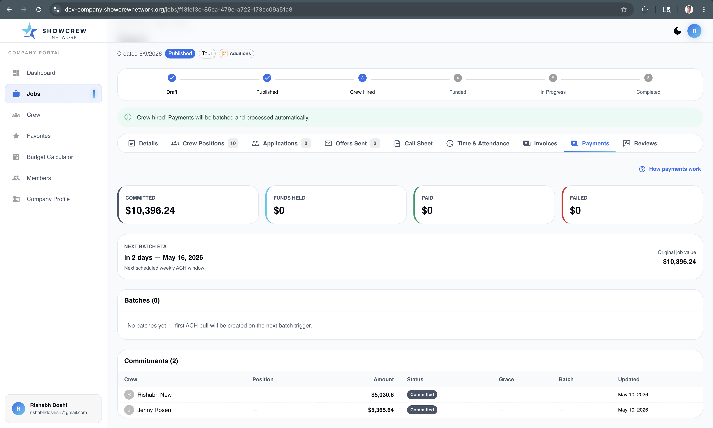
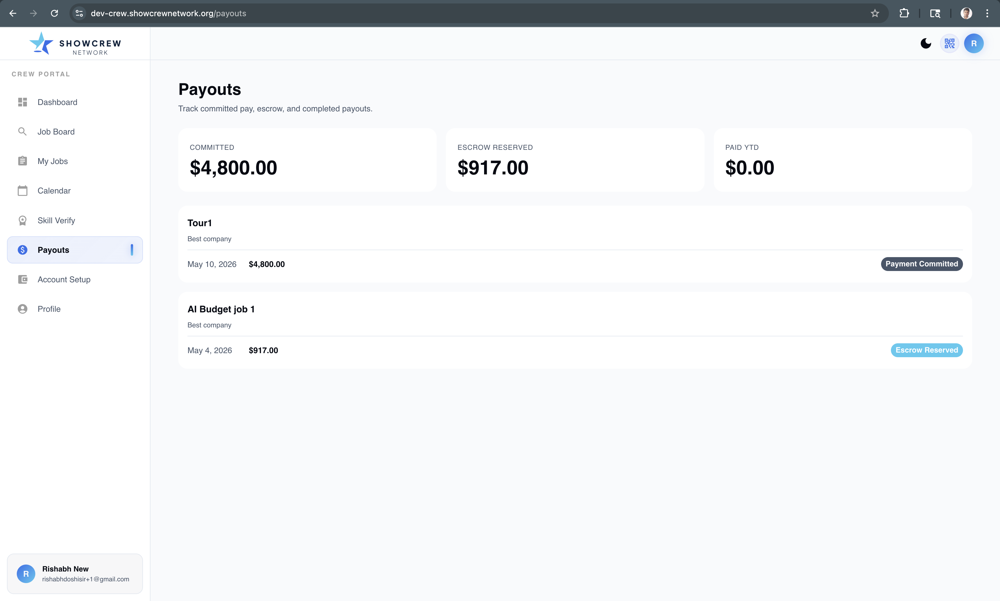
Invoice Tab Upgrade & Segregation (Screenshots)
Company-side invoice experience refresh and crew-side status visibility proof points.
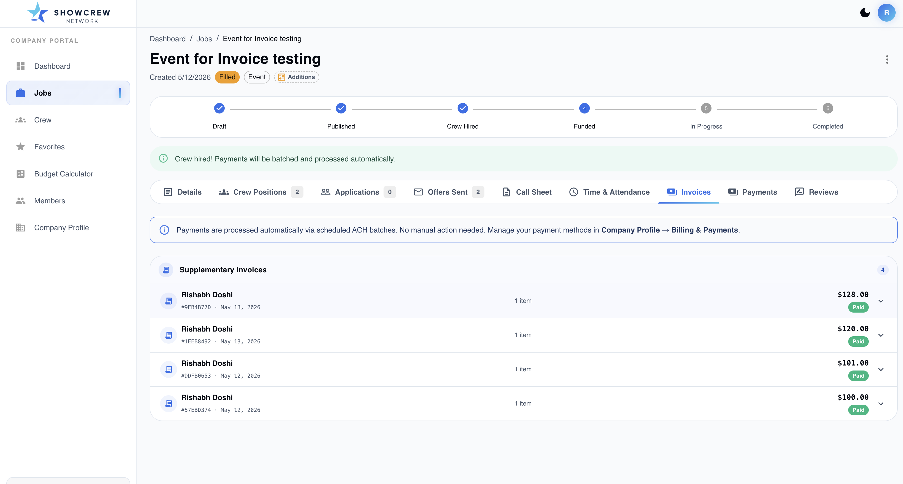
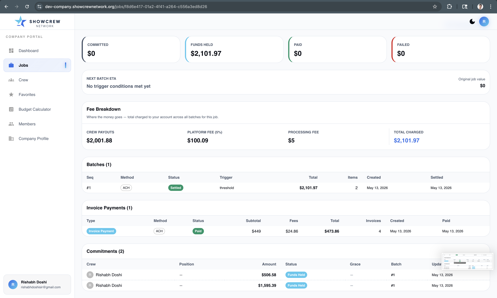
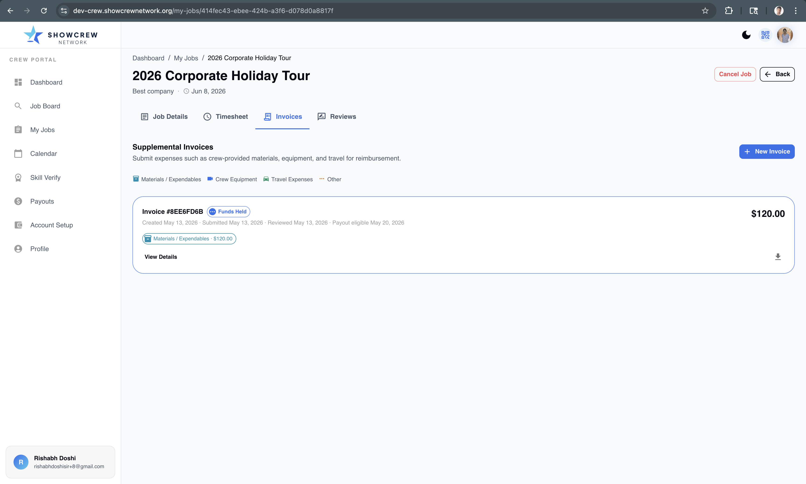
Rates & Pay Policies Upgrade (Screenshots)
Proof points for crew daily/hourly rate entry and company-side minimum-hours override controls.
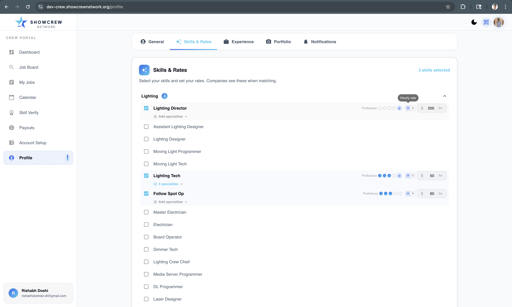
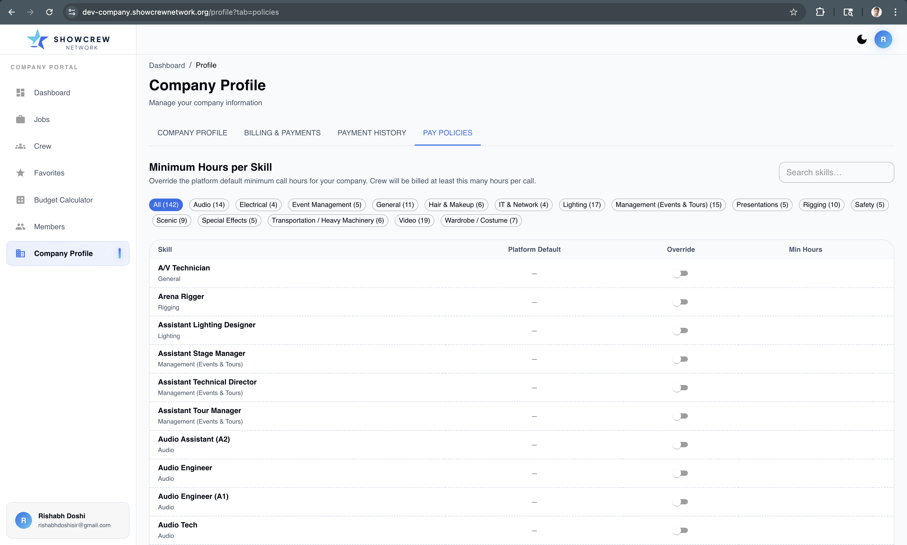
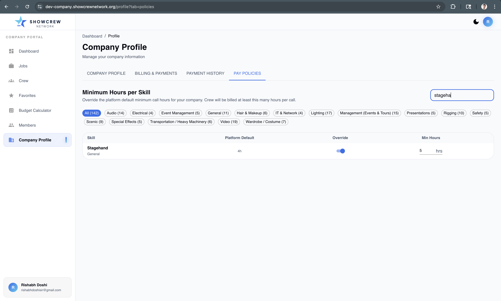
Duplicate Job Option (Screenshots)
End-to-end flow from action menu to duplicate creation and prefilled draft wizard.
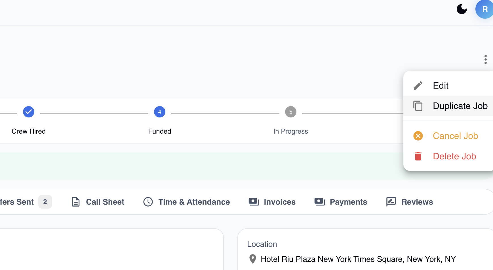
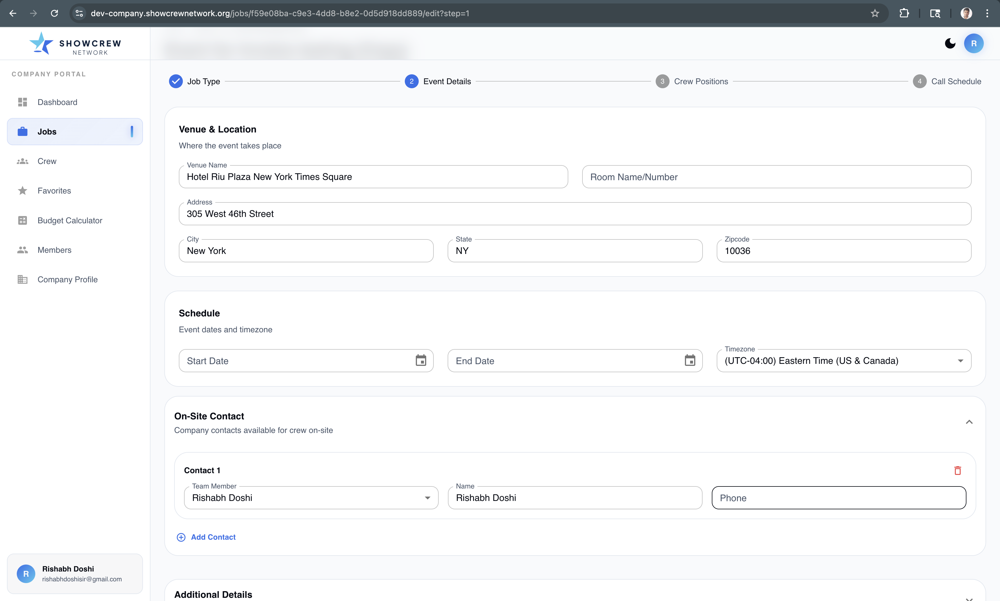
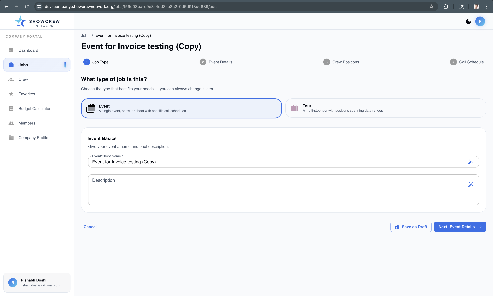
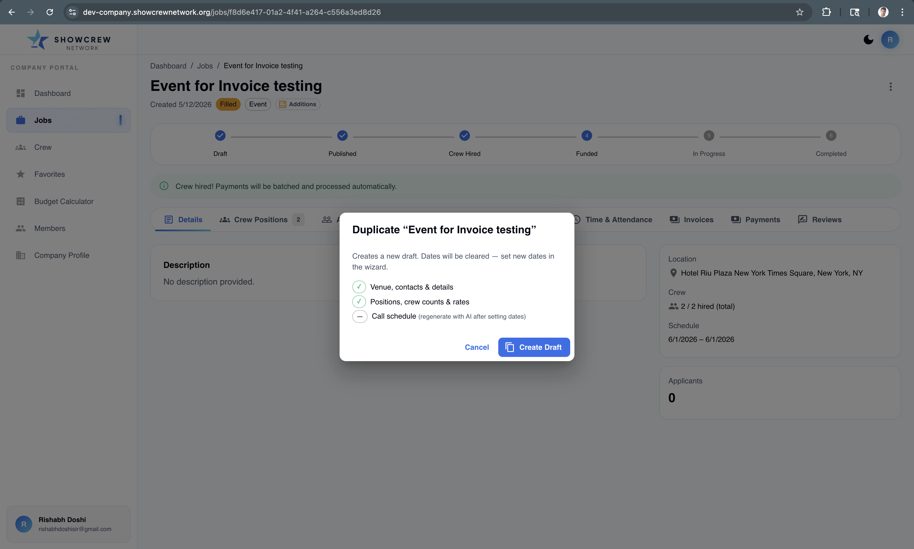
Job Timeline Stepper (Screenshot)
Timeline stepper added on job detail to make progression and funding stage immediately visible.
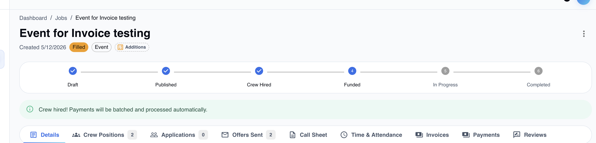
Open Questions
- Does tour need a call schedule?
- Does tour need to have a call sheet?
- Does tour need to have an attendance sheet?
- Is overtime needed to be calculated in the tour?
- How do we want tour payment to happen? Currently it uses the same batch trigger as event jobs, and payouts are weekly.
- Does it make sense for crew to expect a minimum daily payment irrespective of minimum hours if they set a daily rate?